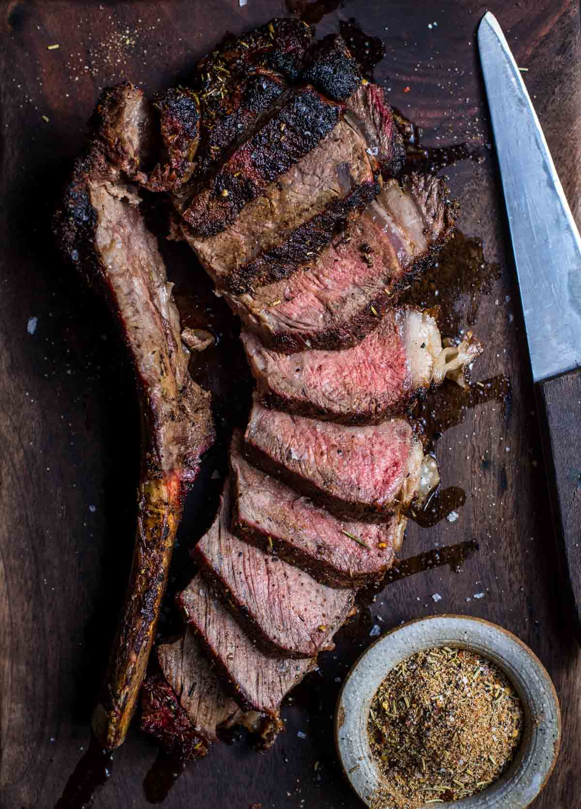

Grilled Tomahawk Steak:

Description
Enshrined within the realm of epicurean enchantment, the grilled tomahawk steak emerges as the undisputed regent of carnivorous indulgence, an unabridged opus of palatal perfection that unfurls like a culinary tapestry, captivating the senses with its regal presence and opulent succulence. A tour de force of gastronomic elegance, this peerless masterpiece commands the utmost deference and reverence.
As the colossal cut, exquisitely defined by its elongated bone reminiscent of a storied tomahawk, is ceremoniously laid upon the fervent embers of the grill, an alchemical transformation takes place, orchestrated by the capricious whims of the searing inferno. The resolute flames bestow upon the steak a charred patina, an alluring crust that ensconces the tender flesh, preserving within its embrace a symphony of elemental flavors that stir the depths of epicurean delight.
Behold, as the epicurean alchemy unfolds, the sinuous marbling, crafted by nature's hand, is liberated from its languid repose. It surrenders to the fires, slowly relinquishing its treasures, rendering each succulent bite an ambrosial revelation. The resulting union of indulgent tenderness, captivating juiciness, and resonant flavors enraptures the discerning palate, elevating the act of consumption to the realm of gastronomic transcendence.
With each tantalizing morsel, a gustatory symphony ensues. The interplay of charred crust and delicate pink flesh evokes a melange of sensations, while the tantalizing aroma of sizzling beef intermingles with the ambrosial wafts of grilled perfection, intoxicating the senses and igniting a primal yearning for culinary gratification.
Thus, with unwavering devotion to the epicurean arts and an unwavering commitment to transcendent gustatory experiences, we humbly present this regal embodiment of carnivorous indulgence. Let each morsel be savored with utmost reverence, and may the consumption of this grilled tomahawk steak be an embodiment of opulence and epicurean enlightenment.
Ingredients:
Steak Rub and Steak:
- 1 tablespoon brown sugar
- 1 tablespoon Montreal steak seasoning
- 2 teaspoons garlic powder
- 2 teaspoons onion powder
- 1 (2 3/4 pound) tomahawk steak (3-inch thick bone-in ribeye)
Compound Butter:
- 1/4 cup salted butter, at room temperature
- 1 tablespoon minced shallot
- 1 clove garlic, minced
- 1 tablespoon chopped fresh chives
- 2 teaspoons reserved steak rub/li>
Steps:
- Step 1: To make steak rub, place brown sugar, Montreal steak seasoning, garlic powder, and onion powder in a small airtight container; shake or stir to combine. Set aside 2 teaspoons steak rub to use in compound butter.
- Step 2: Place steak on a half sheet pan, and rub steak on top, bottom, and sides with remaining steak rub until well coated. Place steak, uncovered, in the refrigerator to dry-brine overnight.
- Step 3:For compound butter, place butter, shallot, garlic, chives, and the reserved 2 teaspoons steak rub in a small bowl. Mash together with a fork until evenly combined. Spoon butter into a small airtight container, cover, and refrigerate until ready to use.
- Step 4:Remove steak from the refrigerator 1 hour before cooking to take the chill off. It will cook on the sheet pan that you used for dry-brining.
- Step 5: Preheat the oven to 300 degrees F (150 degrees C). The reverse sear method is used to cook this big steak, so you will need an instant-read thermometer. If you are using a digital meat thermometer, set the internal temperature to 110 degrees F (43 degrees C).
- Step 6:Bake steak on the sheet pan in the preheated oven until an instant-read thermometer inserted into the center reads 110 degrees F (43 degrees C), about 45 minutes. Begin checking the temperature at 30 minutes.
- Step 7:During the last 15 to 20 minutes of cooking time, preheat an outdoor grill for high heat and lightly oil the grate.
- Step 8:When steak reaches an internal temperature of 110 degrees F (43 degrees C) measured with an instant-read thermometer, remove it from the oven.
- Step 9:Grill steak directly on the grates of the preheated grill; sear on both sides, about 2 minutes per side. This is a fatty piece of meat, so be mindful of flame flare-ups. The internal temperature should now read 125 to 135 degrees F (51 to 57 degrees C) for medium rare.
- Step 10:Remove steak from the grill, and smear compound butter over top. Let butter melt into the steak, heating up the fresh garlic, shallots, and chives. Let steak rest for 10 minutes.
- Step 11:Slice steak and serve with accumulated juices and melted butter. Be sure to serve the bone someone will want to gnaw on it!